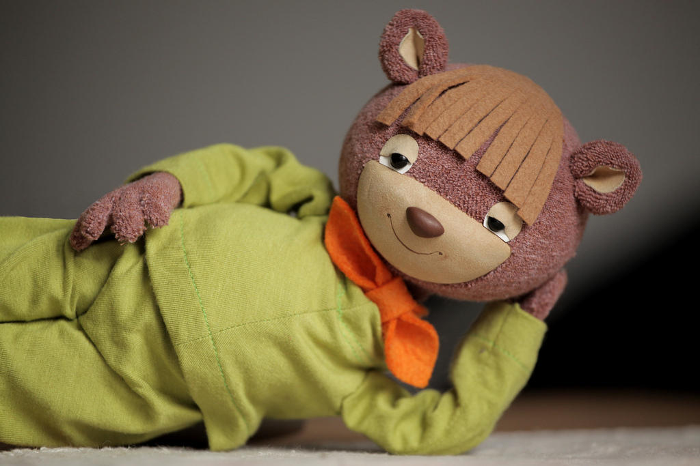
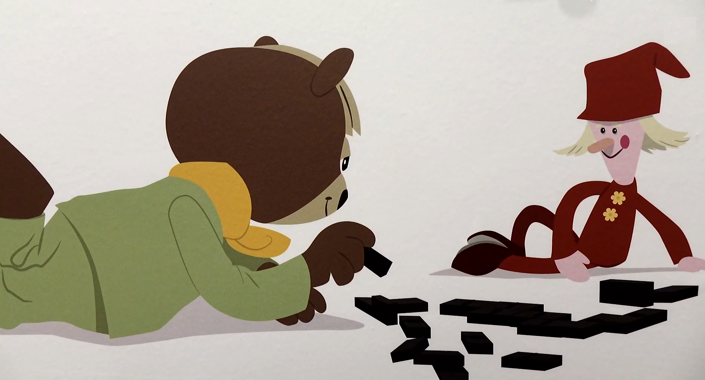
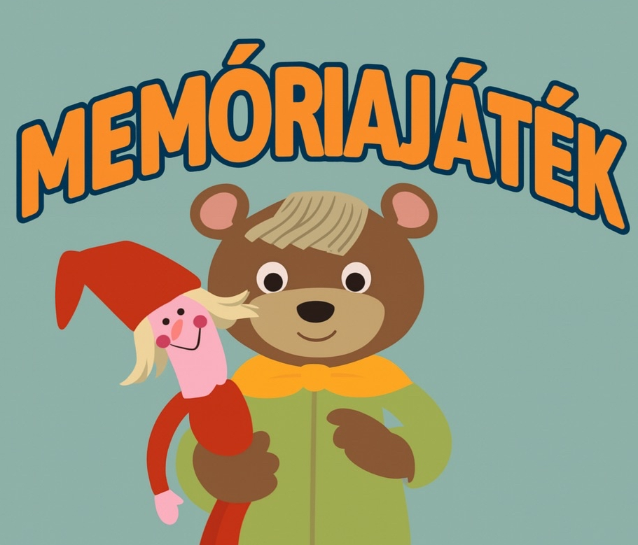
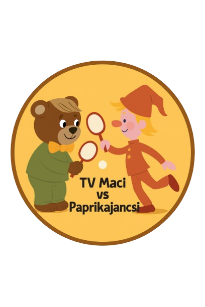
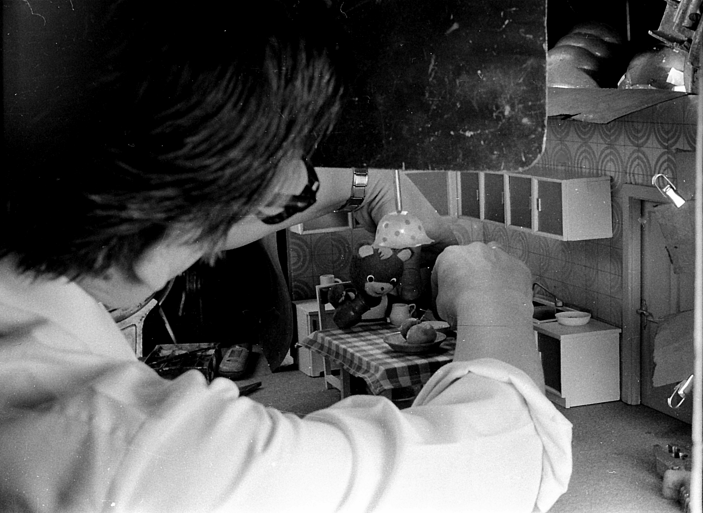
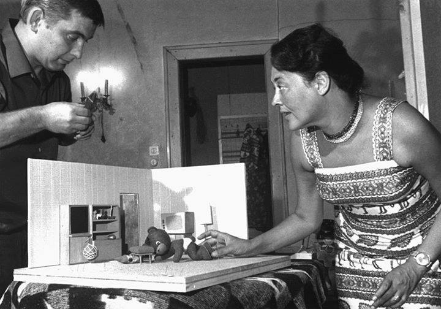

Üdvözlünk a TV Maci Retro Játék Weboldalán!
A gyerekkor legendája újra él — most már te irányítod a TV Macit.
TV Maci – Történet és hangulat
A TV Maci a magyar televízió egyik legismertebb figurája, aki generációk számára jelentette
az esti mesét és a nap lezárását.
A jellegzetes zene, a lassú, nyugodt mozgások és a kedves, egyszerű jelenetek sokakban máig nosztalgiát ébresztenek.

Válassz játékot!
Ugrálj TV Macival

TV Maci kirakó

TV Maci Memóriajáték

TV Maci vs Paprikajancsi
Hogyan készült?
A projekt célja az volt, hogy a TV Maci ikonikus világát modern, interaktív formában
újraalkossuk — úgy, hogy közben megőrizzük a retro hangulatot és a gyerekkor varázsát.
1. Tervezés és vizuális világ
Először a vizuális stílus készült el: saját rajzok, háttérképek, karakterek és animációk.
A cél az volt, hogy minden elem kézzel rajzoltnak hasson, mint a régi TV Maci műsorok.


2. Sprite-ok és animáció
A TV Maci mozgását több külön PNG-képből raktuk össze. A futás, ugrás és állás külön sprite-okból áll.
3. Játékmotor és JavaScript
A játékok logikája teljes egészében nyers JavaScriptben fut — külső könyvtárak nélkül.
Ez biztosítja a gyors működést és a teljes kontrollt a játékmechanikák felett.
4. Webes felület és menük
A teljes oldal több fülre lett bontva: főoldal, történet, játékok, készítés.
A menü animált, retro TV-s stílusú, és mobilon is tökéletesen működik.